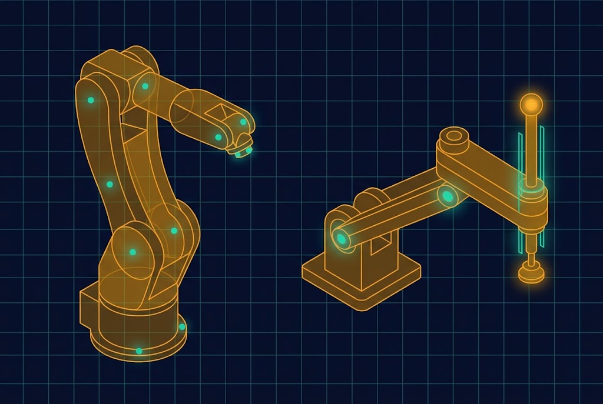
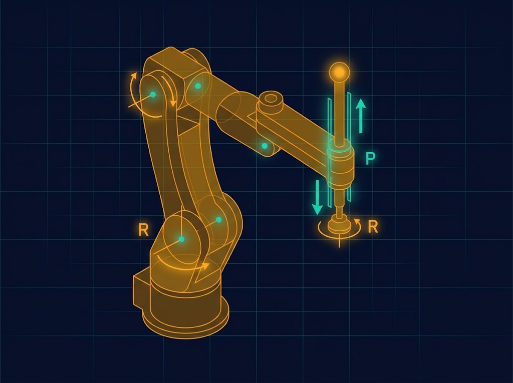
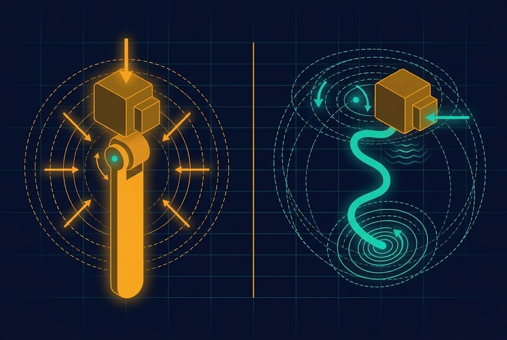
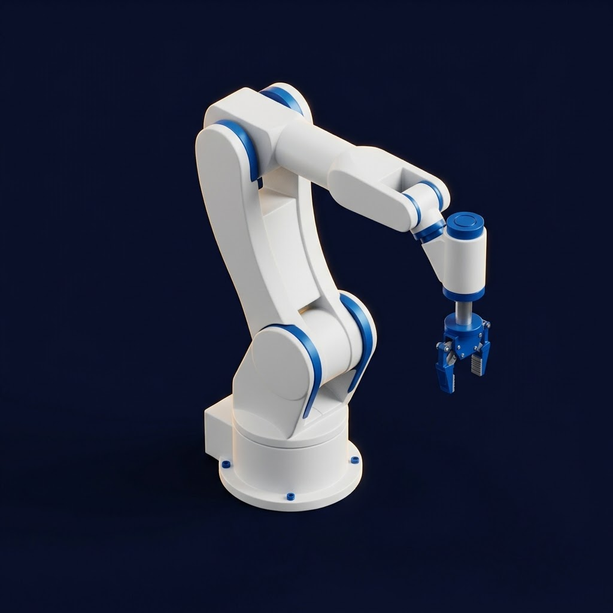
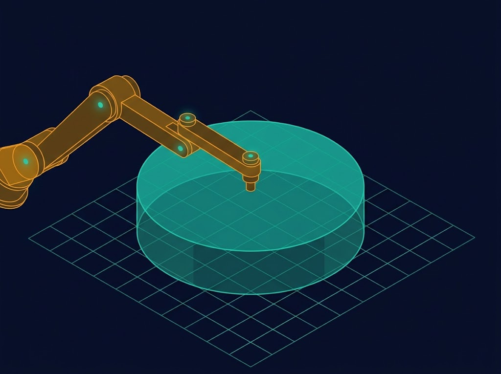
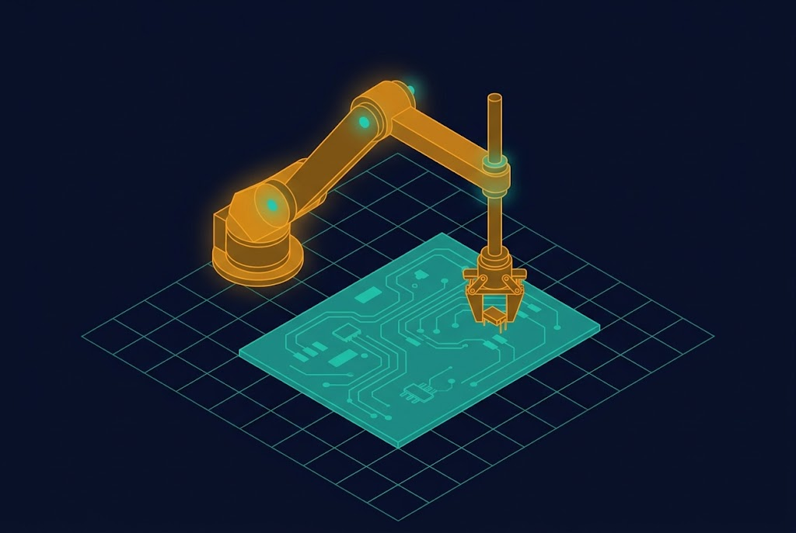
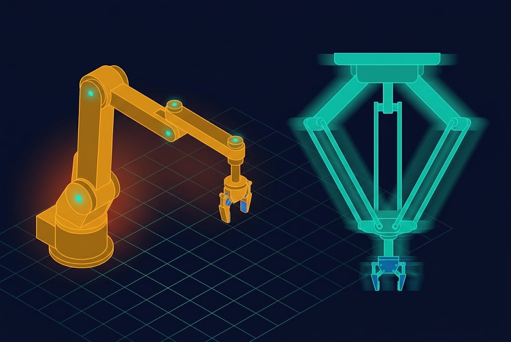

MG
دکتر مسعود گوهریمنش
دانشیار — دانشگاه تربت حیدریه

Selective Compliance Assembly Robot Arm — ربات مونتاژ با انطباقپذیری انتخابی. در این جلسه با پیکربندی RRPR، ویژگی منحصربهفرد انطباق انتخابی، فضای کاری و کاربردهای صنعتی آن آشنا میشویم.
چرا ۹۰٪ خطوط مونتاژ الکترونیک جهان از SCARA استفاده میکنند؟
تا ۴ حرکت رفتوبرگشت در ثانیه
تا ±۰٫۰۱ میلیمتر تکرارپذیری
مناسب جاگذاری دقیق قطعات
مقایسه دو معماری محبوب صنعتی

| معیار | SCARA (RRPR) | ۶R مفصلی |
|---|---|---|
| سرعت در صفحه افقی | بسیار بالا | بالا |
| فضای کاری | استوانه کمارتفاع | کروی بزرگ |
| صلبیت عمودی | بسیار بالا | متوسط |
| انطباق افقی | اختیاری | صلب |
| کاربرد اصلی | مونتاژ الکترونیک | جوشکاری، رنگپاشی |
چهار مفصل: دو R افقی + یک P عمودی + یک R مچ

چرخش حول محور عمودی، در پایه
چرخش موازی با R₁، در آرنج
حرکت خطی عمودی (Z)
چرخش نهایی حول Z
موقعیت نوک بر حسب چهار متغیر مفصلی
هدف را با ماوس بکشید — حل IK با Newton-Raphson
ویژگی منحصربهفرد SCARA

در جهت Z، SCARA بسیار صلب است — مناسب فشار جاگذاری (Insertion Force)
در صفحه XY، انعطافپذیر است — اجازه میدهد قطعه با سوراخ همتراز شود
پیشگامان صنعت

سری G — پیشرو در سرعت و دقت
سری YK — پرکاربرد در مونتاژ
سری Cobra — SCARA با کنترلر پیشرفته
سری TS — دقت بالا برای داروسازی
استوانه کمارتفاع — محدودیت اصلی

نقشه حرارتی نقاط reachable — تشخیص تکینگی
از مونتاژ تا بستهبندی

جاگذاری قطعات روی PCB با سرعت بالا
گذاشتن محصول در جعبه با انطباق انتخابی
پیچاندن خودکار با گشتاور کنترلشده
جابجایی نمونهها در میکروپلیت
اسکن سریع در خطوط تولید
مونتاژ قطعات کوچک با دقت بالا
دو رقیب در سرعت

| معیار | SCARA | دلتا |
|---|---|---|
| حداکثر سرعت | بالا (تا ۲ m/s) | بسیار بالا (تا ۱۰ m/s) |
| فضای کاری | بزرگتر، استوانهای | گنبدی، محدودتر |
| ظرفیت بار | تا ۱۰ kg | معمولاً < ۵ kg |
| کاربرد | مونتاژ، پیچبندی | بستهبندی مواد غذایی |
| پیچیدگی کنترل | سادهتر | پیچیدهتر (سینماتیک معکوس سخت) |
نکات مهم در ساخت یا انتخاب
مرکز جرم لینکهای افقی باید در محور چرخش باشد تا گشتاور کم شود
هرچه سبکتر، سریعتر — آلومینیوم یا کربن توصیه میشود
یاتاقان صلیبی یا ساچمهای برای محورهای R₁ و R₂
موتورهای سبک برای R₁ و R₂ (تا ۲ kg)، استپر یا سروو برای P₃
پیشنمایش جلسه ۱۳
خلاصه مشخصات کلیدی
| پارامتر | مقدار | توضیح |
|---|---|---|
| ساختار | RRPR | دو R افقی، یک P عمودی، یک R مچ |
| درجات آزادی | ۴ DOF | ۳ موقعیت + ۱ جهت |
| ظرفیت بار | ۱ تا ۱۰ kg | بسته به مدل |
| تکرارپذیری | ±۰٫۰۱ تا ±۰٫۰۵ mm | بسته به مدل |
| حداکثر سرعت | ۲ تا ۴ m/s | در صفحه XY |
| فضای کاری | استوانه کمارتفاع | قطر ۳۰۰-۸۰۰ mm، ارتفاع ۱۰۰-۴۰۰ mm |
| کاربرد اصلی | مونتاژ، بستهبندی، پیچبندی | صنایع الکترونیک، داروسازی |
جلسه ۴ — SCARA
پاسخ صحیح را انتخاب کنید
آنچه امروز آموختیم
برای مطالعه بیشتر
Robot Dynamics and Control — مرور کلی SCARA
Introduction to Robotics — SCARA در فصل ۱
استاندارد بینالمللی برای ارزیابی عملکرد ربات صنعتی
جزوات و ویدیوهای آموزشی — ARCSLAB
در جلسه ۵ به سینماتیک مستقیم رباتهای دو و سه لینکی سری با روش استاندارد دناویت-هارتنبرگ (DH) میپردازیم.